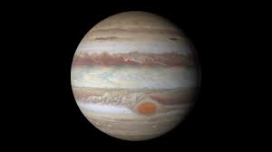

Vivimos en un sistema planetario formado por el Sol y los cuerpos celestes que orbitan a su alrededor, entre ellos, nuestra Tierra. Hay muchos sistemas solares en el Universo, pero a este le llamamos, sencillamente, el Sistema Solar, este pertenece a la galaxia llamada Vía Láctea, formada por miles de millones de estrellas, situadas a lo largo de un disco plano de 100.000 años luz.
Además del Sol, que es una estrella, los astrónomos clasifican los planetas y demás cuerpos de nuestro Sistema Solar en tres categorías:
Un planeta solar es un cuerpo celeste que está en órbita alrededor del Sol, con masa suficiente para tener gravedad y mantener el equilibrio hidrostático. Los planetas tienen forma redonda y han despejado las inmediaciones de su órbita. Nuestro Sistema Solar tiene cuatro planetas terrestres o interiores (Mercurio, Venus, la Tierra y Marte) y cuatro gigantes gaseosos exteriores (Júpiter, Saturno, Urano y Neptuno). Desde la Tierra en adelante, todos los planetas tienen satélites que orbitan a su alrededor.
Un planeta enano es un cuerpo celeste en órbita alrededor del Sol, con suficiente masa para tener forma esférica, pero no la necesaria para haber despejado las inmediaciones de su órbita. Son: Plutón (hasta hace poco catalogado como planeta), Ceres (antes considerado el mayor de los asteroides), Makemake, Eris y Haumea. De momento.
Todos los demás objetos que orbitan alrededor del Sol son considerados colectivamente como "cuerpos pequeños del Sistema Solar". En esta categoría se incluyen los asteroides (con formas irregulares, la mayoría en el cinturón de asteroides, entre Marte y Júpiter), los objetos del cinturón de Kuiper (Sedna, Quaoar), los cometas helados de la nube de Oort y los meteoroides, que tienen menos de 50 metros de diámetro.
Dentro del Sistema Solar, solo existen ocho planetas (Mercurio, Venus, la Tierra, Marte, Júpiter, Saturno, Urano y Neptuno). Plutón, Ceres y Eris (descubierto en el 2005, anteriormente conocido como 2003 UB313 y el desencadenante del cambio de definición) pasan a ser planetas enanos.
Este es el planeta que se encuentra más cercano al Sol, lo que hace difícil observarlo, salvo dos horas después de la puesta del Sol o antes de su salida.
La órbita de este planeta alrededor del Sol es bastante curiosa, ya que está más inclinada respecto al plano de la eclíptica que el resto de los planetas. Mercurio está tan cerca del Sol que recibe seis veces más radiación solar que la que nos llega a nosotros. Su superficie, al igual que la de la Luna, está llena de cráteres, que también son producto del impacto de meteoritos de variados tamaños, desde la época de formación de los planetas. Estos cráteres se han conservado intactos desde aquellos años, únicamente porque Mercurio no posee atmósfera.
Venus es el planeta más cercano a la Tierra, y es por eso que muchas veces lo podemos apreciar en el cielo como una estrella muy luminosa. Es más, por su tamaño y distancia del Sol es muy parecido al nuestro; incluso durante muchos años se pensó que en él podría existir tanta vida como en la Tierra. Se ha comprobado que la temperatura de su superficie llega a los 460°C, producto de su atmósfera, que es muy densa. La luz del Sol puede atravesarla y calentar su superficie, pero el calor no es capaz de escapar a través de la atmósfera, quedando siempre atrapado. Esto es lo que denominamos efecto invernadero.
La superficie de este pequeño planeta no se ha podido observar claramente, ya que siempre a su alrededor hay una densa capa de nubes. Sin embargo, sabemos que tiene montañas más altas que el propio Monte Everest y posee grandes depresiones que hacen suponer que antiguamente hubo agua en él.
Por fin llegamos a nuestro planeta. Sabemos muy bien cómo es por dentro, pero nunca hemos podido verlo desde el espacio con nuestros propios ojos, salvo los astronautas cuando han ido a misiones en el espacio.
La Tierra es el único planeta que tiene agua en forma líquida, otorgándole un intenso color azul; también se encuentra en las nubes de la atmósfera, aunque en forma de cristales de hielo. Otra característica importante es su atmósfera que, a diferencia de Venus o Marte, tiene muy poco dióxido de carbono.
La corteza terrestre está dividida por placas empujadas por lentas corrientes, las que muchas veces se separan en un período determinado de tiempo y otras chocan entre sí, provocando grandes terremotos.
Como ya dijimos, la Tierra posee un satélite, la Luna.

La imagen nos muestra una vista de la superficie de Marte, obtenida de una de las tantas expediciones a este planeta.
Éste es uno de los planetas más conocido por todos nosotros. No solo por su color rojo, sino también por la gran curiosidad que ha causado en todo el mundo, hasta donde se han enviado numerosas sondas espaciales que buscan estudiarlo. Además, siempre hemos creído que los extraterrestres vendrían de Marte. Simples suposiciones.
Se cree que en el pasado Marte era muy parecido a la Tierra y que en su superficie habrían existido corrientes de agua; sin embargo, hoy en día no se ha descubierto nada líquido, sólo algo de hielo.
Su atmósfera es muy tenue y está formada por dióxido de carbono. Constantemente, Marte es víctima de enormes tormentas de polvo que se producen con el cambio de estaciones. Su tamaño es aproximadamente la mitad de nuestra Tierra y su superficie es muy parecida a la de la Luna.
Este es el planeta más grande del Sistema Solar. Su tamaño es aproximadamente diez veces el tamaño de nuestro planeta y cuenta con un anillo. Posee una fuerza gravitatoria tan grande, que es capaz de afectar el movimiento del resto e incluso alejar cometas de sus órbitas.
Gran parte de él está formado por hidrógeno en estado líquido, salvo cerca de la superficie visible, donde la presión es menor y el hidrógeno se puede apreciar en forma de gas. Está cubierto de densas nubes en una atmósfera muy espesa que contiene aproximadamente un 88 por ciento de gas hidrógeno molecular y un 11 por ciento de gas helio. Su temperatura puede alcanzar los 123¼C bajo cero, por lo que la vida en él es imposible; pero mientras más se desciende hacia el interior de sus nubes, más se calienta, alcanzando temperaturas cinco veces más altas que en la Tierra.
Sus satélites son muy numerosos; se cree que tiene alrededor de 16. Destacan los cuatro mayores, que son: Ío, Europa, Ganimedes y Calisto, llamados galileanos por haber sido descubiertos por Galileo Galilei.

Sin duda este es uno de los planetas más hermosos del Sistema Solar, por los enormes anillos que posee, contándose tres como los más importantes. Si bien aparece pequeño visto desde la Tierra, Saturno no difiere mucho del tamaño de nuestro planeta; lo que pasa es que está al doble de la distancia de Júpiter, lo que lo hace ver más pequeño.
Su característica principal es su baja densidad, ya que es el único planeta del Sistema Solar menos denso que el agua. Eso quiere decir que podríamos hacerlo flotar en una piscina si pudiéramos.
Saturno es el planeta que posee más satélites, con un total de 23, siendo el más grande Titán. Su atmósfera está formada por nitrógeno y metano, lo que normalmente hace que no veamos su superficie.
Sus anillos pueden observarse simplemente con un telescopio y están compuestos de millones de partículas de polvo y recubiertas de hielo.

Fue uno de los planetas descubiertos con la ayuda de un telescopio. Se caracteriza porque su eje de rotación está sobre el plano de su órbita alrededor del Sol, lo que hace que los polos apunten sucesivamente hacia el Sol. En cambio, el resto, tienen su eje más o menos perpendicular al plano de la eclíptica.
Además, Urano, al igual que Saturno, posee anillos. Hasta hace un tiempo se pensaba que sus satélites eran cinco, pero se han descubierto diez más. Su diámetro es casi cuatro veces el de la Tierra y su densidad oscila entre la de Júpiter y la de Saturno, y la de la Tierra y la Luna.
En su interior tendría la mitad de agua, un cuarto de metano y un cuarto de material rocoso y metálico, parecido a la Tierra. Sobre todo esto estaría su atmósfera.
Sus principales satélites son Oberón, Titania, Umbriel, Ariel y Miranda.
Neptuno fue descubierto en 1846. Es uno de los planetas más grandes y se caracteriza por su intenso color azul.
Este planeta fue descubierto a través de un telescopio en el año 1846 y ha sido el último visitado por una sonda interplanetaria. Posee cuatro anillos muy estrechos y ocho satélites, aunque se mencionan normalmente los dos más grandes: Nereida y Tritón. La atmósfera de Neptuno posee metano e hidrógeno y otros gases que aún no están identificados. Además, estaría rodeado por una capa de nubes, parecidas a la de Júpiter, Saturno y Urano.
La estructura interior de este planeta se parece mucho a la de Urano; es decir, tendría un núcleo rocoso varias veces superior al tamaño de la Tierra, rodeado por grandes capas de hielo.
Las imágenes que se han captado a través de sondas han permitido ver el color azulado de este planeta, producto del metano contenido en su atmósfera. Este planeta también posee anillos, que son completos y con ciertas partes más brillantes que otras.
Este planeta fue descubierto en 1930 y desde ahí pasó a ser el noveno del Sistema Solar, aunque en la actualidad existen dudas sobre su condición de planeta. Es el único que no ha sido visitado por ninguna sonda, por lo que se conoce muy poco de él.
Su órbita está inclinada respecto a la de los demás planetas y es el más alejado del Sol. Además, es el más pequeño del Sistema Solar, casi del tamaño de la Luna.
Una de las características de Plutón es que atraviesa órbitas de otros planetas, como ya lo ha hecho varias veces trasladándose a la órbita de Neptuno, pudiendo incluso estar más cerca del Sol en determinadas ocasiones.
Su satélite se llama Caronte, que al ser descubierto se pensó que por tenerlo era planeta. Sin embargo, perfectamente podría ser un asteroide, ya que estos también los poseen. Está compuesto principalmente por hielo y gas metano.
| PLANETAS | TAMAÑO (DIAMETRO) | RADIO ECUATORIA | DISTANCIA AL SOL (KM) |
| MERCURIO | 4.880 km. | 2.440 km. | 57.910.000 |
| VENUS | 12.104 km. | 6.052 km. | 108.200.000 |
| LA TIERRA | 12.756 km. | 6.378 km. | 149.600.000 |
| MARTE | 6.794 km. | 3.397 km. | 227.940.000 |
| JUPITER | 142.984 km. | 71.492 km. | 778.330.000 |
| SATURNO | 108.728 km. | 60.268 km. | 1.429.400.000 |
| URANO | 51.118 km. | 25.559 km. | 2.870.990.000 |
| NEPTUNO | 49.532 km. | 24.746 km. | 4.504.300.000 |
| PLUTÓN | 2.320 km. | 1.160 km. | 5.913.520.000 |